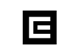
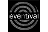
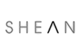

Na této adrese tvořili weboví řemeslníci 2007–2012
 Honza Javorek
Honza Javorek
 Michal Wiglasz [viglaš]
Michal Wiglasz [viglaš]
Pod značkou javorek.net jsme vyrobili hromady HTML šablon, CSS stylů a PHP kódu. Od září 2012 tvoříme každý zvlášť.
Co máme za sebou?
-

- 
- 
-

-

-

-

-

-

-

-

- 
- Michal Krutiš, H1.cz
-
S prací Honzy Javorka a Michala Wiglasze jsem byl vždy spokojen. Rychlá reakce, kvalitní práce a fajn přístup není to jediné co se mi na spolupráci libí. Oproti většině totiž také plní termíny, které slíbí.
- Jan Nedvěd, INIZIO
-
S panem Javorkem a Wiglaszem INIZIO s.r.o. již dlouhodobě spolupracuje na vývoji internetových řešení. Díky spolehlivosti, flexibilitě a kvalitě výchozích řešení v další kooperaci doufáme i do budoucna.
- Lukáš Fabik, BEfirst
-
Se službami Michala Wiglasze jsem nadmíru spokojen. Práci vždy dokončí v domluveném termínu a odvede ji na 200 %.
- Ondřej Beneš
-
Completely satisfied with the job Honza did.
- Miguel Taveras, Noro IP
-
Michal, you rock!
It's always a pleasure to work with you.
- Jan Kaltoun, Eventival, Ltd.
-
Honza's PHP, (My)SQL, JavaScript, HTML and CSS programming skills are solid and from the code he writes it can be clearly seen that not only is that because of the work experience he has but also because of a very strong theoretical background. His code not only works but is also beautiful to look at.
Human-wise our cooperation was great and without any major problems.
Whenever I'm looking for a programmer in the future, Honza will definitely be one of the first people I'll contact.
- Jan Friml, Friml.net
-
Always reliable in keeping terms and by providing the top-quality work. I am very happy and proud to work with Honza and do not hesitate to hire him again.
- Tomáš Menšík, MenSeek
-
Honza is very flexible and creative person, he always fulfill our demands in time. We regard highly his advices and ideas.
„Značka je pro firmu jako pověst pro osobu. A pověst si vybudujete tím, že děláte těžké věci dobře.” — Jeff Bezos